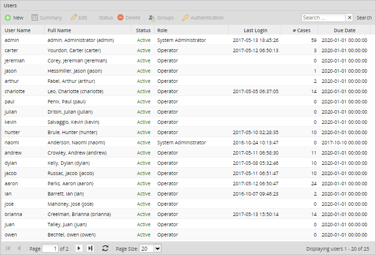
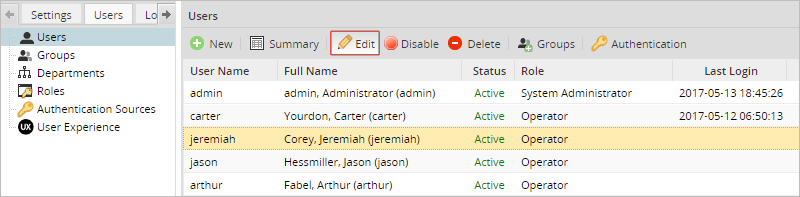
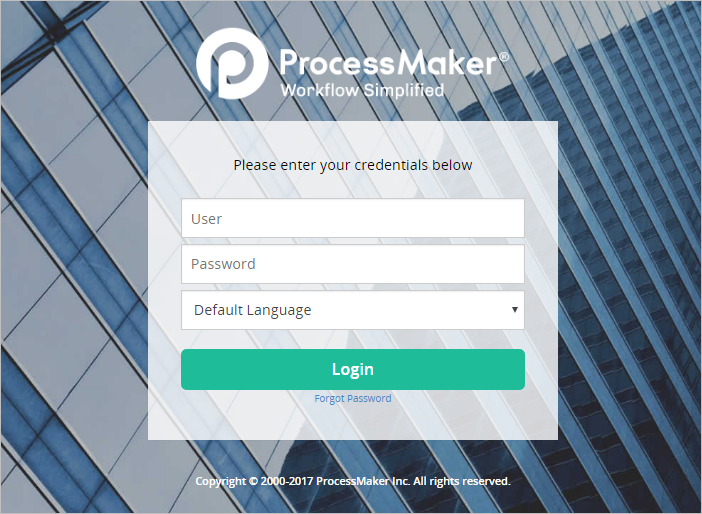
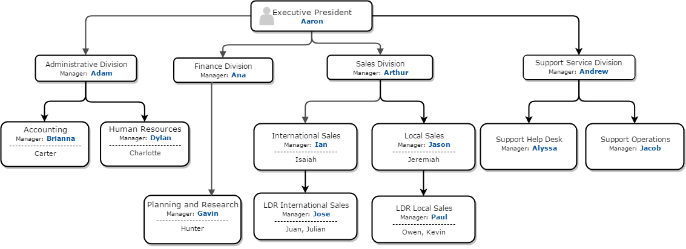

Overview
The Enterprise Trial allows you to try out ProcessMaker's Enterprise Edition for a 30 day period on the cloud. After signing up for an account, you will receive a workspace where you can log in and work with sample processes and case data to better evaluate ProcessMaker's features. In addition, the Enterprise Trial includes integrations with Knowledge Tree, Pentaho Reporting and Advanced LDAP, so you can test some of the advanced features in the Enterprise Edition.
Using your Enterprise Trial Account
Sample Processes
Eight sample processes have been preinstalled in your workspace, so you can immediately begin running cases and trying out ProcessMaker's functions. The eight processes are:
- Purchase Request 3.0.1
- Expense Report 3.0.1
- Invoice Approval Process 3.0.1
- IT Service Request 3.0.1
- Leave of Absence Request 3.0.1
- Supplier Registration 3.0.1
- Employee Onboarding 3.0.1
- Employee Offboarding 3.0.1
- Material Ordering
Feel free to study and modify these processes to better learn how to design your own processes.
To run a case, see the documentation about each process to find out which group have been assigned to the starting tasks of each process. Then, log in as one of the members of the group that is assigned to the starting task of the process you want to run. Go to the CASES menu and click on New Case in the sidebar. After selecting the process, a new case will begin.
Understanding Processes
In ProcessMaker, a process consists of a series of tasks. A task is a collection of work assigned to users or groups of users.
The tasks can be connected by gateways (known as routing rules in previous versions of ProcessMaker), which control which task(s) are executed next in the process. There are gateways that select the next task based on a condition or a parallel flow. The workflow generally flows down one path, but it can be split into multiple paths with a parallel gateway (converging) and it can be joined into a single path with a parallel gateway (diverging).
Only one person at a time can be designated to work on a task, so assignment rules are used to select one user from the pool of available users who are assigned to a task. Users can be selected to work on a task based upon a cycle, manual selection, the value in a variable, who they report to in their department, or self selection (self-service).
Each task consists of a series of steps, which are discrete units of work such as Dynaforms, input documents and output documents. Triggers, which are custom PHP code, can be fired before or after any step to add custom logic and functionality to the process.
A case is an individual instance of a process being executed. Think of a process as a path, and a case as one time walking down that path. Only users who are assigned to the first task of a process are allowed to start a case in that process. The user who starts the case is automatically assigned to the initial task in the process. After completing the initial task, the case is routed to the next task in the process. Each time a user is designated to work on a task, the case will appear in the user's Inbox under the Cases menu. Once that user starts working on the case, its status will change to "Draft" and it will be moved to the Drafts tray.
By default, users can only access cases where they are the designated user, meaning that they have to be assigned to work on the case. Once a user has completed his/her task, or the case has been reassigned to a different user, the first user will no longer be able to open the case. Process Permissions can be assigned to give users read-only access to cases so they can see the case data, even when they are not the currently designated user. In addition, users can be selected as Process Supervisors to give them write access to the Dynaforms and/or input documents in a case, so they can review and change case data.
Sample Users
Your workspace includes dozens of sample users, who are organized into groups and departments.

To see the profiles of any of these users, go to Admin > Users > Users, select a user and click on the Edit button.


At the login screen, enter the username of the sample user, as well as the password, which is the same as the password of the admin user. This password was provided when subscribing to the Enterprise edition.
Sample Groups
In ProcessMaker, users are organized inside groups and departments.
Groups are non-hierarchical collections of users, which can be assigned to tasks in processes. Users can be members of multiple groups.
The following groups have been created in your workspace:
- Manager: This group includes all users designated as managers.
- Warehouse Users: This group includes all users from the warehouse.
- Supervisor: This group includes eleven users that have been designated as supervisors.
- Finance: This group includes users from the financial division and Planning and Research department.
- Human Resources: This group includes users from the Human Resources department.
- IT Operations: This group includes users from the Support Operations department.
- IT Help Desk: This group includes users from the Support Help Desk department.
- Employees: This group includes users from all departments. Refer to the graphic below.
To create additional groups, see the documentation for Managing Users > Groups.
Sample Departments
Departments are hierarchical collections of users, which represent the organizational structure of a company or organization and its chain of command. Each department has a supervisor/manager, to whom the members of the department report. Departments can have unlimited levels of subdepartments. Departments cannot be assigned to tasks in a process, but can be used in assignment rules to determine which user is assigned to the next task in the process.
Each member reports to his/her superior in the chain of command. For example, a member of a sub-sub-department reports to his/her supervisor, who in turn reports to the manager of a sub-department, who then reports to the manager of the top-level department in the organization.
The following sample groups and departments have been created in your workspace, so you can use them in your processes:

To see the departments' structure inside ProcessMaker, log in as the "admin" user and go to ADMIN > Users > Departments. To create additional departments, see the documentation for Managing Users > Departments.
Configuring the Trial Workspace
The trial workspace can be used without making any additional configurations; however, it is necessary to configure the workspace to take advantage of some of the additional features offered by ProcessMaker.
Configuring the Email Server
To be able to send out email notifications, the workspace will have to be configured to connect to an email server. Go to ADMIN > Settings > Email to set up a connection to an email server.
If your organization has its own email server, then enter its information in the settings to connect to it. If your organization doesn't have an email server available, then online email services such as Gmail, Yahoo! or Hotmail can be used. For more information, see Email Settings.